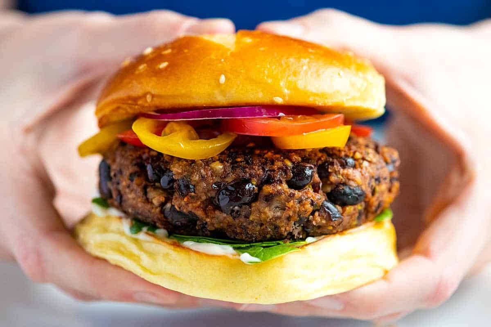

Plant-Based Bean Burger

Ingredients:
- 1 can (15 oz / 425g) of black beans, drained and rinsed
- 1 cup (90g) of bread crumbs (use gluten-free breadcrumbs to make it gluten-free)
- 1/2 cup (60g) of cooked quinoa
- 1/4 cup (40g) of diced onion
- 1/4 cup (15g) of chopped fresh parsley
- 2 cloves of garlic, minced
- 1 tsp ground cumin
- 1/2 tsp smoked paprika
- 1/4 tsp salt
- 1/4 tsp black pepper
- 1 tbsp (15ml) of olive oil
Instructions:
- Preheat the oven to 375°F (190°C) and line a baking sheet with parchment paper.
- In a mixing bowl, mash the black beans with a fork until they are roughly mashed.
- Add in the bread crumbs, cooked quinoa, diced onion, chopped parsley, minced garlic, ground cumin, smoked paprika, salt, and black pepper. Mix well until everything is combined.
- Using your hands, form the mixture into 4-6 patties, depending on how big you want your burgers to be.
- In a non-stick pan, heat the olive oil over medium heat. Add the patties and cook for 4-5 minutes on each side until they are browned and crispy.
- Transfer the patties to the prepared baking sheet and bake for 10-15 minutes or until they are cooked through and firm.
- Serve the burgers with your favorite toppings such as avocado, lettuce, tomato, onion, mustard, ketchup, or vegan mayo, and your favorite burger buns.
Enjoy your delicious Whole Food Plant-Based Bean Burgers!
Back to Home